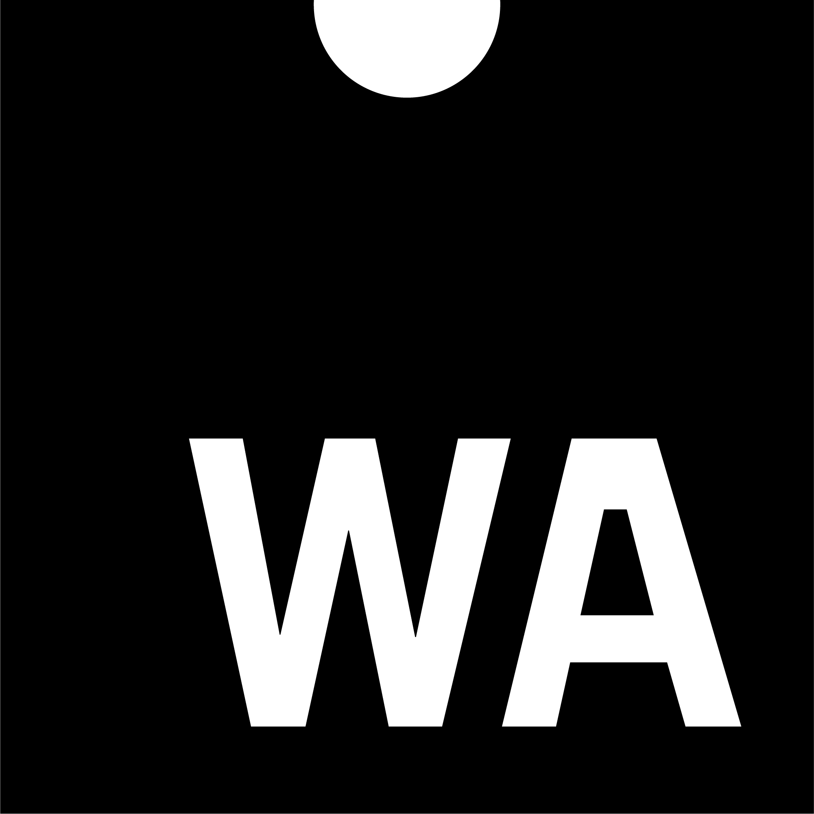

If you happen to be in #Fukuoka on 16 Sept, register to our #developer #meetup #w3cdevs2019 co-located with #w3cTPAC
https://cards.twitter.com/cards/18ce53z7ril/7qm0z
🗓️August@w3c: another slow month, awaiting a very busy September! In the meantime, a few reminders:
https://twitter.com/w3cdevs/status/1156849773217026048W3Cは福岡をはじめ全国各地から地元のWebデザイナーやアプリケーション開発者を招き、W3Cコミュニティとのデモンストレーション、プレゼンテーション、そしてディスカッションに参加します https://ti.to/w3c/w3c-developer-meetup-fukuoka-2019 #w3cdevs2019 #w3c_keio @naomi5500 #html5j
https://twitter.com/w3cdevs/status/1156849776165625856Get your ticket for the @viewsourceconf, 30 Sept-1 Oct in #Amsterdam, a conference for future-thinking front-end developers
https://twitter.com/viewsourceconf/status/1140644507639091205
https://twitter.com/w3cdevs/status/1156849778640203777The @MDN Web Developer and Designer survey is still open, so please add your voice! https://cards.twitter.com/cards/18ce53z7ril/7qblf
https://twitter.com/w3cdevs/status/1156849782943625216#WebAssemby (or #WASM) is a game changer for the #Web platform, and its #WorkingGroup (https://www.w3.org/community/webassembly/) issued 3 documents in Candidate Recommendation status, so #timetoimplement! https://twitter.com/w3c/status/1151825580721131520
#WebAssembly is a low-level assembly language that provides fast, efficient and portable features. In #browsers, it is designed to complement and work alongside #JavaScript
https://twitter.com/w3cdevs/status/964131886716112898
https://twitter.com/w3cdevs/status/11569236381820231681) "WebAssembly Core Specification" describes a safe, portable, low-level code format designed for efficient execution and compact representation #performance
https://www.w3.org/TR/2019/CR-wasm-core-1-20190718/
https://twitter.com/w3cdevs/status/11569236534325207073) "WebAssembly Web API" describes the integration of WebAssembly with the broader #WebPlatform
https://www.w3.org/TR/2019/CR-wasm-web-api-1-20190718/
https://twitter.com/w3cdevs/status/11569236603530567682) "WebAssembly JavaScript Interface" provides an explicit #JavaScript #API for interacting with #WebAssembly
https://www.w3.org/TR/2019/CR-wasm-js-api-1-20190718/
https://twitter.com/w3cdevs/status/1156923658163687424Listen to @luke_wagner, @from Mozilla, who gave an overview of #WASM at last month's #W3CWorkshop on Web Games #w3cgames2019. He notably details the WebIDL Bindings proposal to hook Web APIs into #WebAssembly
https://vimeo.com/350135351
https://twitter.com/w3cdevs/status/1156923662479646728Check out this other short video of @luke_wagner shot last year at #w3cTPAC #Lyon https://vimeo.com/311391518
https://twitter.com/w3cdevs/status/1156923667919593472The videos of the talks at #w3cgames2019 are online! Watch them at https://vimeo.com/showcase/6176604
https://cards.twitter.com/cards/18ce53z7ril/7tfyb
Successful #w3cgames2019 event hosted by @Microsoft! The report reflects the discussions on threading support, WebIDL Bindings in #WebAssembly, latency, cloud gaming, #monetization, indie #games, etc.: https://www.w3.org/2018/12/games-workshop/report.html
And huge thanks to @FacebookGaming for sponsoring! https://twitter.com/w3c/status/1157239712375087105
https://twitter.com/w3cdevs/status/1157270965723774976It's #GeekWeek! From today to 9 August, @w3c staff is taking a week to experiment, explore and innovate. It is a time to collaborate with colleagues with different expertise, and broaden one's horizon.
https://twitter.com/w3cdevs/status/11583514859960852483D rendering is not only about GPU features. Efficient traversal in #JavaScript using multiple cores is tough as there's no way to share structured objects across #WebWorkers. Check out the discussion on threading at #w3cgames2019 @deltakosh: https://www.w3.org/2018/12/games-workshop/report.html
For more, watch the videos of the #W3CWorkshop #w3cgames2019 talks: https://vimeo.com/showcase/6176604
https://twitter.com/w3cdevs/status/1160931526873366529Open for registration! Awesome speakers and great networking at next month's #developer #meetup #w3cdevs2019 co-located with #w3cTPAC #Fukuoka 🇯🇵
https://www.w3.org/2019/09/Meetup/
https://twitter.com/w3cdevs/status/1160955010211098624Call to action! 👉The Gamepad #API needs more engagement to finalize version 1 and add support for modern #gamepad features (e.g. touchpad and light indicators) later on. Read @tidoust's #gamepad discussion summary in the #w3cgames2019 report:
https://www.w3.org/2018/12/games-workshop/report.html
Watch also the #w3cgames2019 videos: https://vimeo.com/showcase/6176604
https://twitter.com/w3cdevs/status/1161615754929823745#WebTransport and WebCodecs to the rescue at #w3cgames2019 to reduce latency of transmission in cloud gaming scenarios: https://www.w3.org/2018/12/games-workshop/report.html#webtransport #gaming #HTML5
#w3cgames2019 #W3CWorkshop videos are also online! https://vimeo.com/showcase/6176604
https://twitter.com/w3cdevs/status/1164128102353637376@matatk and @uxcodeline explore #accessibility needs and solutions for #games at #w3cgames2019: https://www.w3.org/2018/12/games-workshop/report.html#a11y #a11y #ux
https://twitter.com/w3cdevs/status/1164265182874525696There are tons of audio-processing code written in C/C++. @hochsays proposes a low-level Audio Device Client specification to help port this code to the #Web at #W3CWorkshop #w3cgames2019. Read the discussion summary: https://www.w3.org/2018/12/games-workshop/report.html#audio
... and/or listen to @hochsays' talk "Better and faster audio I/O on the Web": https://vimeo.com/350904743
https://twitter.com/w3cdevs/status/1164631781506801666Discussions about #discoverability and #monetization of #games on the Web were led by @tcmg at the #W3CWorkshop #w3cgames2019 - read the summary: https://www.w3.org/2018/12/games-workshop/report.html#discoverability
https://twitter.com/w3cdevs/status/1165916365930340353Comments welcomed on the updated @wai draft document on "Alternatives to Visual Turing Tests on the Web" that addresses the #CAPTCHA #accessibility issue: https://www.w3.org/TR/turingtest/ #a11y https://twitter.com/w3c/status/1164993084289167363
https://twitter.com/w3cdevs/status/1165938872058036224Come listen to this year's awesome speakers: @sundress (@Google), @Lady_Ada_King (@samsunginternet), @linclark (@mozilla), Yutaka Obuchi (@pixiv_corp), @somelaniesaid (@MSEdgeDev) on topics related to #WebXR #HighContrast #CSS #accessibility #WebXR #WebAssembly #WASM #3DGraphics https://twitter.com/w3c/status/1166335287557074944
Special thanks to our sponsors @nttcom @Microsoft @pepabo @mozilla @stickermule @igalia @Yubico @saucelabs @webcastors @l_withyou for supporting this event!
https://www.w3.org/2019/09/Meetup/sponsors.html
https://twitter.com/w3cdevs/status/1166340269379375111Important upcoming #W3CWorkshop hosted by @plutoVR, 5-6 November 2019 in #Seattle 🇺🇸 and chaired by @LeonieWatson https://www.w3.org/2019/08/inclusive-xr-workshop/ cc @ImmersiveWebW3C @dontcallmeDOM
#WebXR #ImmersiveWeb #accessibility #a11y #UX #InclusiveDesign https://twitter.com/w3c/status/1166996258877321217
https://twitter.com/w3cdevs/status/1167015355686019072One week left! Are you based in #Europe 🇪🇺 and actively involved in @w3c #WebStandards development? Do apply for funding this work (before Sept. 6) and help shape the future standards! https://www.standict.eu/OpenCalls/standicteu-8th-open-call @Stand_ICT https://twitter.com/Stand_ICT/status/1167431088618332160
To our followers who give feedback, contribute to and implement @w3c specifications, financial support is available . So, how about submitting an application now? 🙋♀️🙋♂️https://www.standict.eu/applicant/register
https://twitter.com/w3cdevs/status/1167693285521072131